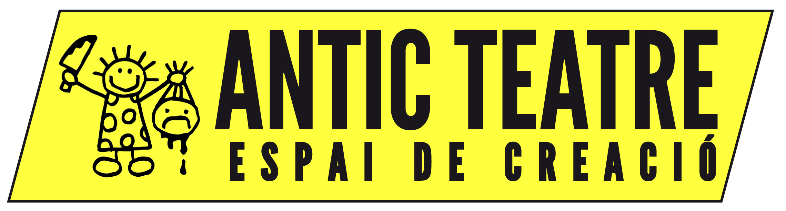
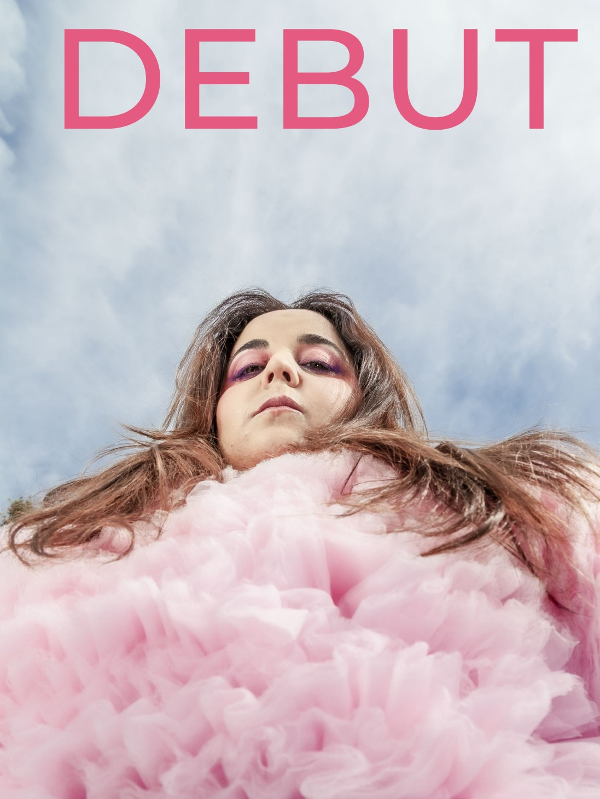
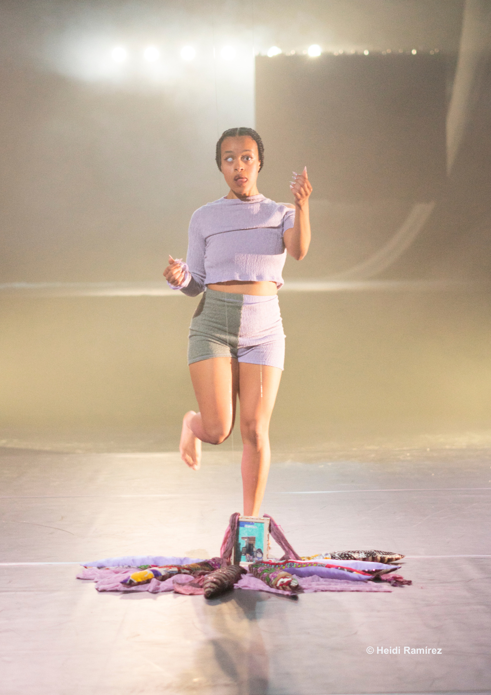
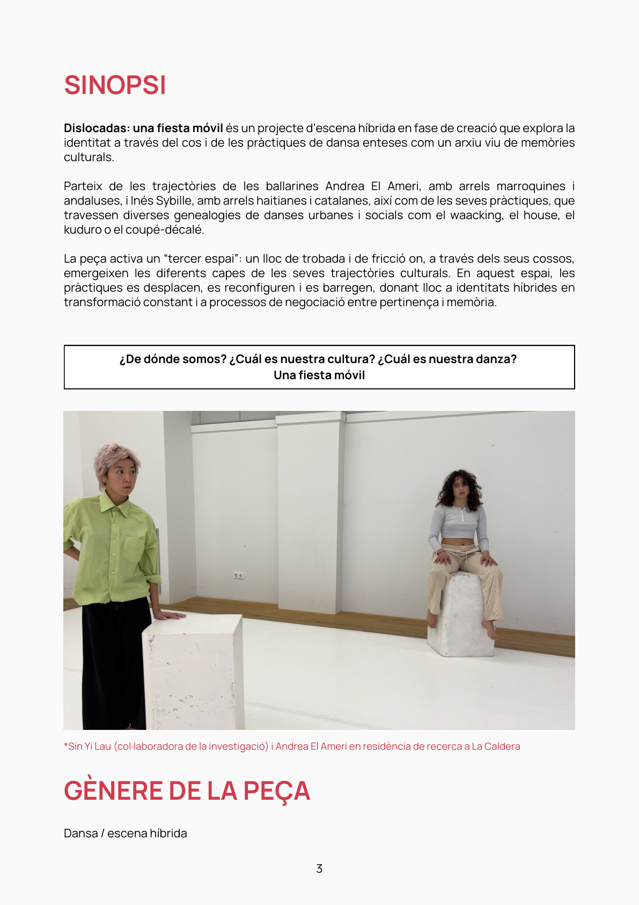

Dansa Metropolitana
Tres propuestas para abrir un diálogo de programación desde Antic Teatre: cuerpo, transformación, archivo, espiritualidad, identidad y fiesta.
Rosa Romero
DEBUT: humor y presencia, entre el stand-up, el flamenco y las artes vivas.
02Inés Sybille
Simbi en aguas astronómicas: agua, archivo, diáspora, espiritualidad y memoria motriz.
03Andrea El Ameri
DISLOCADAS: una fiesta móvil, junto a Inés Sybille. DOMA como referencia de su trabajo anterior.

DEBUT
Una performance concebida como un rito de iniciación frente al público. Rosa se expone con el deseo de ser aceptada y amada: cruzar un umbral, cambiar de cuerpo, espacio y estado, y transformarse en algo diferente.
La invitación a mirar pone en juego la relación entre intérprete y comunidad, el deseo de pertenencia y la fragilidad de la aceptación. La pieza cuestiona quién acoge a quién y qué esperamos de las comunidades artísticas.
Dirección, dramaturgia e interpretación: Rosa Romero. Acompañamiento dramatúrgico: Alberto Cortés. Trabajo corporal: Patricia Caballero. Vestuario: Gloria Trenado (Nantú). Paisaje sonoro: Pitu García. Iluminación: Carmen Mori.
Rosa trabaja con el humor y la presencia en una propuesta que se sitúa entre el stand-up, el flamenco y las artes vivas. La transformación del cuerpo y la relación directa con el público atraviesan la pieza.
El vídeo completo corresponde a la función del 8 de junio de 2021 en el Teatro de la Maestranza de Sevilla. Duración indicada en el dossier: unos 50 minutos. Caché, disponibilidad y rider técnico: pendientes de confirmar.

Simbi en aguas astronómicas
Simbi es una familia de divinidades del vudú haitiano vinculadas a puntos de agua y manantiales. La pieza conecta el arroyo con el stream digital y construye un archivo híbrido, coreográfico, analógico, sonoro y familiar que piensa territorio, diáspora y memoria motriz.
Inés trabaja desde una práctica situada entre danza, investigación, tecnopoéticas negras, espiritualidad, archivo y mutación. También incluyo Santa de sustrato autónomo como recorrido anterior.
Me interesa mucho cómo trabaja el archivo y la espiritualidad. Veo a Inés como una artista que puede crecer mucho en los próximos años. Simbi en aguas astronómicas, su propuesta vinculada al agua, es una pieza potente que recomendaría especialmente. Apoyarla puede ser muy valioso: trabaja mucho y todavía no cuenta con tanto apoyo.

DISLOCADAS: una fiesta móvil
Proyecto en creación que explora la identidad a través del cuerpo y de las prácticas de danza como archivo vivo de memorias culturales. Cruza las raíces marroquíes y andaluzas de Andrea con las raíces haitianas y catalanas de Inés, junto con waacking, house, popping, kuduro y coupé-décalé.
DOMA se incluye como trabajo anterior para conocer su lenguaje corporal. Los vídeos de DISLOCADAS corresponden al proceso de creación; conviene confirmar con Andrea el estado actual de la pieza.
Andrea lleva tiempo trabajando y tiene una potencia muy clara. Esta propuesta puede generar una sinergia interesante con Inés Sybille: hay un público que puede acercarse a ambas piezas y un diálogo real entre sus prácticas. Para esta selección de Dansa Metropolitana, conviene conocer el momento actual del proyecto y sus condiciones de presentación.